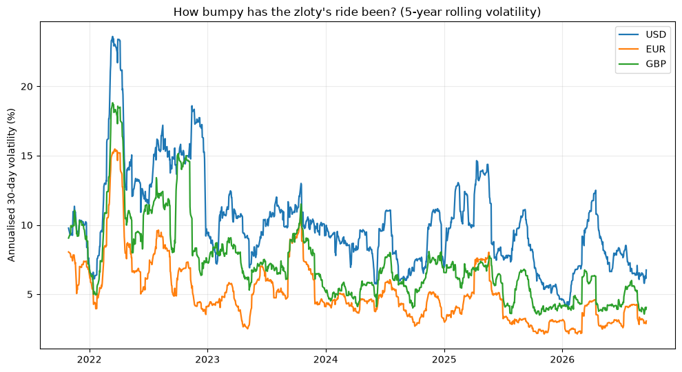
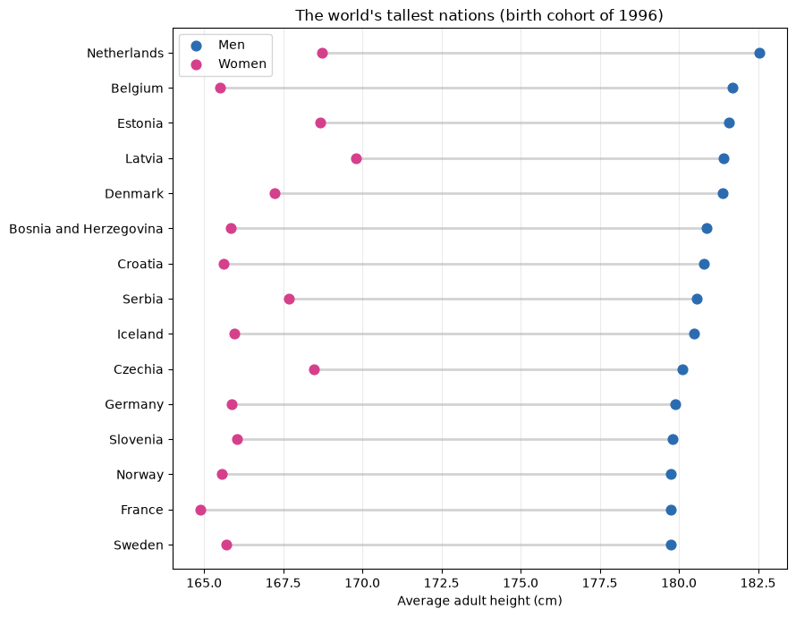
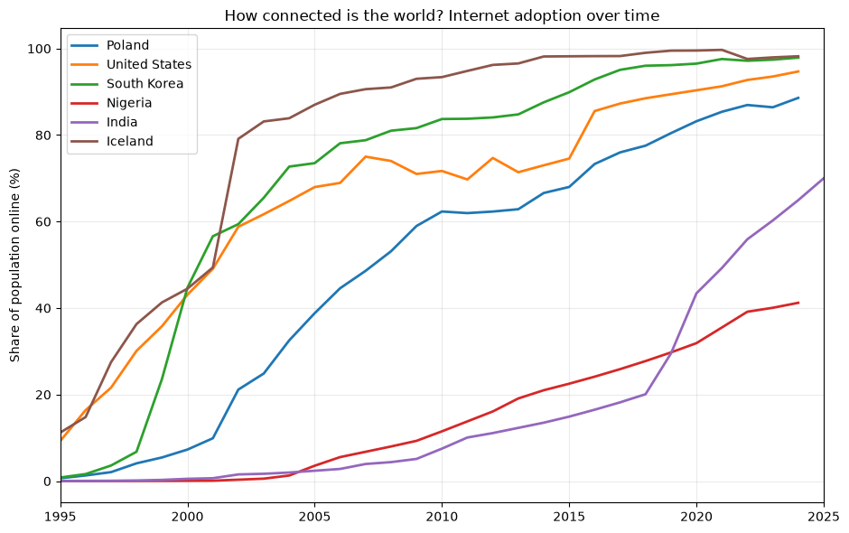

I'm a data enthusiast who likes turning spreadsheets and public datasets into something people actually want to look at. Right now my toolkit is Power BI and Tableau for dashboards, and Python (pandas, matplotlib, Jupyter) for one-off data stories — this site is basically a running log of that. Based in Bytom, Poland, always happy to talk data over email.
September 17, 2026
Currency Volatility

How bumpy has the zloty's ride against USD, EUR and GBP really been? A Jupyter notebook pulling five years of daily rates straight from the NBP (Narodowy Bank Polski) API.
September 16, 2026
Tallest Nations

Which countries produce the tallest people, and how big is the gap between men and women within each of them? A notebook built on Our World in Data's height statistics.
September 15, 2026
How Connected Is the World?

Tracking the internet adoption curve for Poland and five other countries, from the dial-up era to (nearly) universal access. Data from Our World in Data.